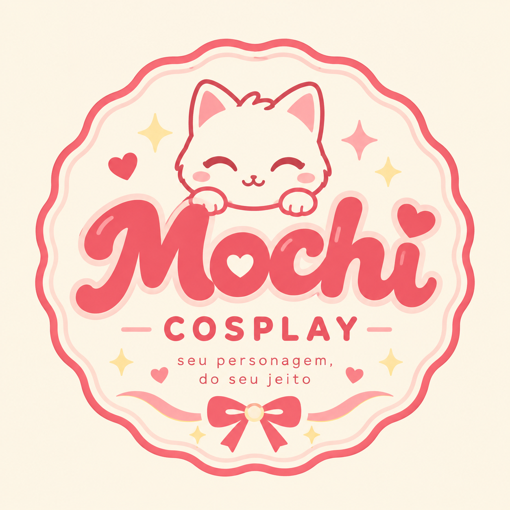
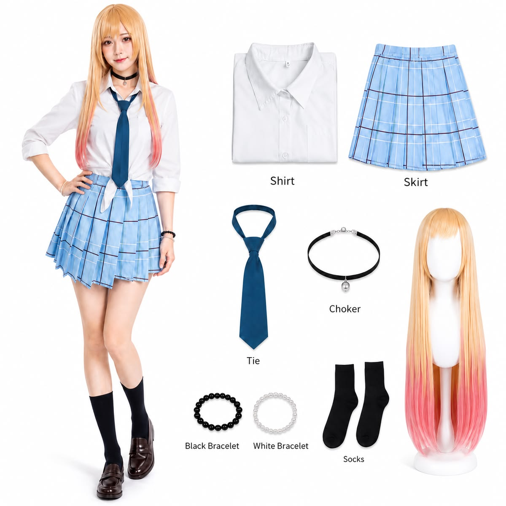
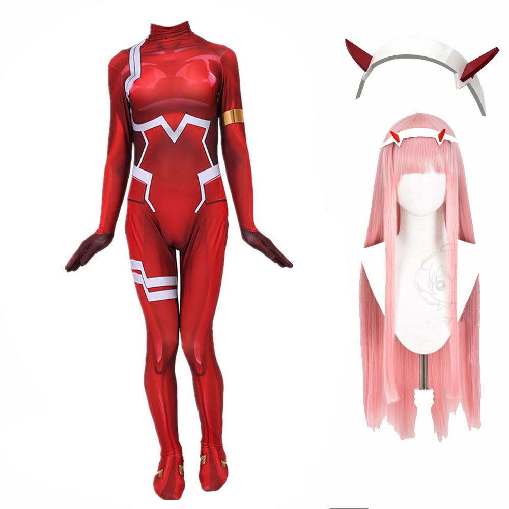
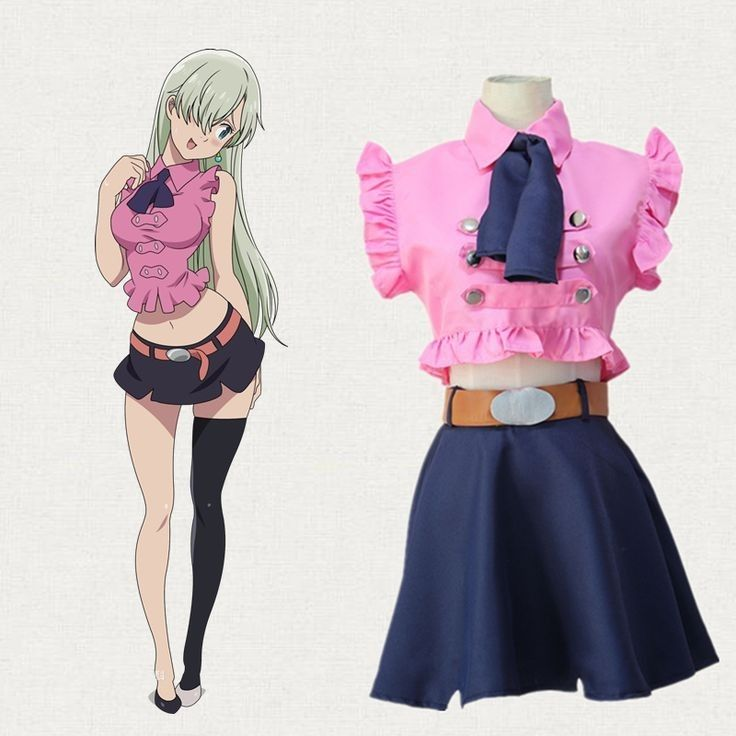
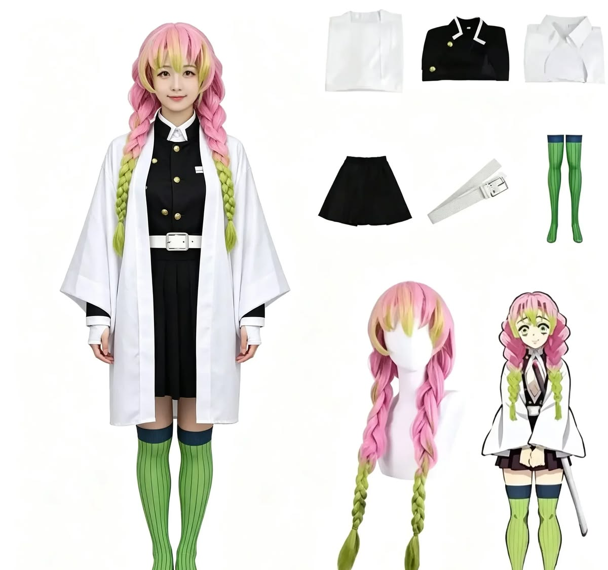

Cosplays feitos a mão, com costura delicada. Entrega rápida e garantia de vida por 30 dias.
Ver CosMochis

Dê vida à Marin Kitagawa com este cosplay inspirado na protagonista de My Dress-Up Darling! 💕 Ideal para eventos, convenções, festas temáticas, ensaios fotográficos ou para completar sua coleção de cosplays.
R$ 179,90
Cosplay inspirado na personagem Zero Two, de Darling in the Franxx, com design baseado em seu icônico uniforme. Uma opção ideal para eventos, convenções, ensaios fotográficos e apresentações.
R$ 249,90
Cosplay inspirado na Elizabeth Liones, personagem de Nanatsu no Taizai (The Seven Deadly Sins). O conjunto reproduz o visual característico da personagem, sendo ideal para eventos, convenções, ensaios fotográficos e apresentações..
R$ 299,90
Cosplay inspirado na Mitsuri Kanroji, personagem de Demon Slayer: Kimetsu no Yaiba. O conjunto reproduz o visual característico da Hashira do Amor, sendo ideal para eventos, convenções, ensaios fotográficos e apresentações.
R$ 154,90"Amei o cosplay! O tecido é confortável e os detalhes são muito bonitos. Com certeza compraria novamente."
"Gostei bastante do produto, principalmente do acabamento. Demorou um pouquinho para chegar, mas veio bem embalado e ficou lindo!"
"Minha primeira compra na Mochi Cosplay e adorei! O cosplay ficou perfeito e a qualidade superou minhas expectativas. 💕"
Sim! Entregamos em Chapecó e região em até 2 dias úteis.
Temos 30 dias de garantia de vida. Trocamos sem custo.
Chame no WhatsApp: indicamos conforme suas medidas.